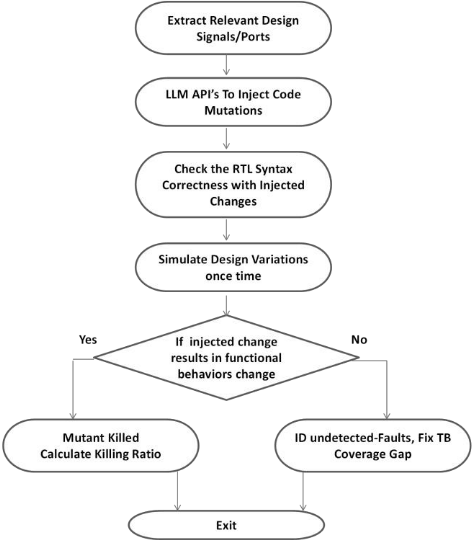
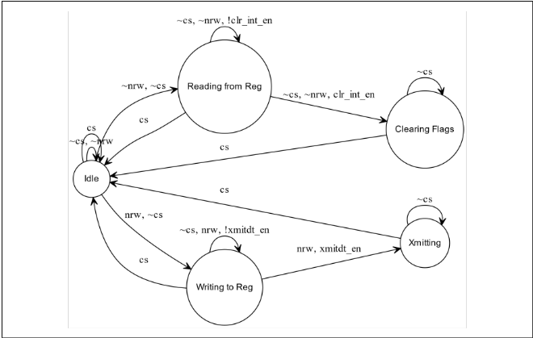
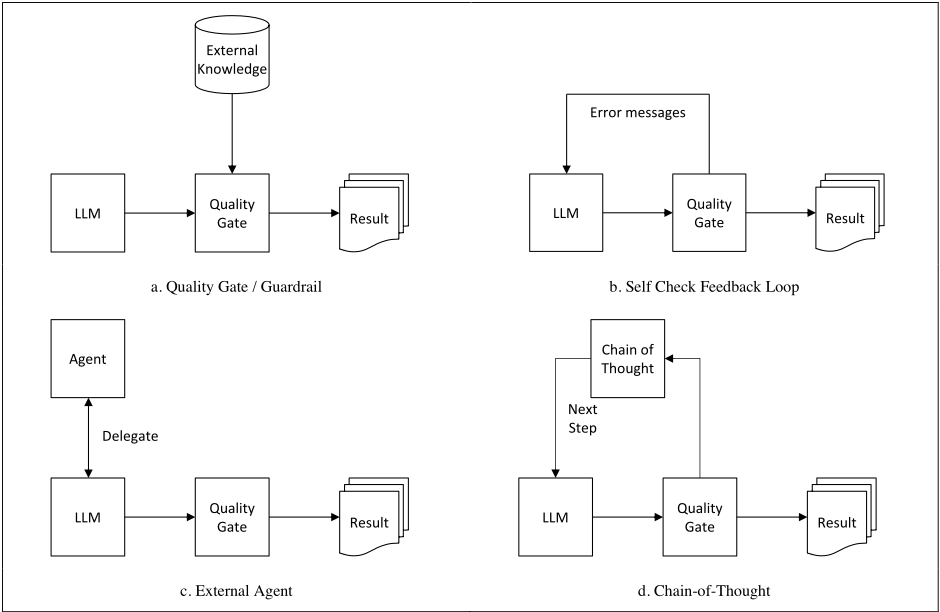

大语言模型（LLM）用于验证：综述及其在数据增强（Data Augmentation）中的应用
该论文系统综述了 LLM 在验证领域的应用，覆盖 assertion 生成、coverage closure、formal verification、debugging、functional safety/security、代码生成与数据增强，并汇总各方向代表性工作的量化结果。作者用本地托管的开源 Code LlaMa 34B 做了三组实验：LLM mutation-based testing 自动注入算子级故障以暴露 testbench 覆盖漏洞、bottom-up/top-down 两种 prompt 策略加速 RTL 设计创建、以及 Verilog 模块的 FSM 自动可视化。实验显示 75% 的 LLM 注入变更可直接编译，testbench 平均仅检测到 50.59% 的注入变更，验证了 LLM 自动化定位 testbench 漏洞的价值。核心结论是 LLM 原始输出不可直接用于验证，需配合质量门禁、反馈闭环、外部 agent、程序化规则+LLM 四种应用范式保障质量；并指出 HDL 训练数据欠代表导致幻觉与指令遵循问题，当前性能总体仍落后经典方法。
解决两个问题：(1) LLM 在硬件验证各环节（需求工程、coverage closure、formal verification、debugging、functional safety/security、代码生成、数据增强）的应用现状缺乏系统梳理，需要综述其能力边界与量化效果；(2) LLM 存在固有的预测错误（幻觉），如何在不直接使用原始输出的前提下安全集成进对质量要求严格的验证流程，并通过实验验证开源 LLM 在数据增强（自动生成设计变体与故障变体）上相对人工数据准备的生产力与质量收益。
文献综述 + 开源 LLM 实验。实验采用本地托管的 Code LlaMa 34B 与高级 prompt engineering 模式：(1) LLM mutation-based testing 框架——提取 RTL 信号/变量/端口上下文，用 prompt 指示 LLM 修改逻辑、算术、位运算与相等算子生成故障版 DUT，编译保证语法正确后，对比原 DUT 与变更 DUT 的仿真 dump 计算 Mutation Killing Ratio，未检测案例反馈用于修补 testbench 覆盖漏洞；(2) bottom-up（由小块模块逐步重构）与 top-down（Flipped Interaction Pattern，由 LLM 反向提问澄清规格）两种设计创建策略对比；(3) 设计理解与 Graphviz FSM 可视化。最后归纳四种 LLM 应用范式：质量门禁/护栏过滤、带错误反馈的闭环迭代、外部高精度 agent 协作、程序化规则+LLM（chain-of-thought）。
LLM mutation 注入实验（3 个 in-house 设计，各 12 个变体，分别注入 63/69/105 处变更）：75% 的 LLM 生成变更编译无错，25% 仍需人工修复；testbench 平均仅检测 50.59% 的注入变更，49.41% 未被检测，暴露 testbench 覆盖漏洞
综述引用结果：GPT-4 语句级 coverage 预测 zero/one/multi-shot 准确率 84.47%/90.71%/90.5%（行级仅 20-30%）；Baldur 结合自动证明工具可证明 Isabelle/HOL 基准中 65.7% 的定理（新 SOTA）；AutoFL 在 acc@1 下比最佳经典方法多识别 40% 新 bug；Libro 再现基准数据集中 33.5% 的 bug；LLM4DV 对 primitive data prefetcher core 达 98.94% code coverage，Ibex Instruction Decoder 降至 86.19%，实用 Ibex CPU 仅 5.61%；DIVAS 用 GPT-4 生成相关 CWE 成功率 40%-55%；finetuned Verilog 生成模型在 basic/intermediate/advanced 问题成功率 98.7%/72.8%/59.9%，功能正确率 41.9%（code-davinci-002 为 35.4%）；CodeChain 整体正确率 61.5%，高于 GPT-4 的 34.75% 与 GPT-4+人工反馈自修复的 52.60%
引用的 assertion 生成研究中仅 9.29% 生成的 assertion 正确，但最佳 prompt 组件组合贡献了 80% 的正确 assertion
训练数据统计：2022 年 5 月分析显示 GitHub 上主要 HDL（Verilog/SystemVerilog/VHDL）项目仅 39.5k 个，而 JavaScript/Java/Python 分别为 6.8m/5.6m/3.4m
区别于单点 LLM 应用研究，本文提供了聚焦验证（而非泛 EDA/软件工程）的系统性综述，并将 LLM 引入 mutation-based testing：用 LLM 自动生成故障变体替代人工构造，以 Mutation Killing Ratio 定位 testbench 覆盖漏洞，实现验证数据增强的自动化；同时基于综述与实验归纳出四种保障 LLM 输出质量的应用范式，明确警示不得将 LLM 原始输出直接用于验证，并给出开源 LLM 本地部署以规避 IP 泄漏风险的实践路径。
相关度级别：medium
命中能力域：2.6 Fault simulation/Z01X/TFMEA | 2.7 CyberSec/自动化
理由：论文不涉及团队 2.1-2.4 域的 DFT/ATPG、BSCAN、OCC/LBIST、HBM4/UCie 测试核心技术，也未触及 2.5 域的 ISO 26262 安全机制设计（其 functional safety 章节实为面向 security 的 DIVAS 工作流），因此不构成对核心技术的直接命中。但其内容与两个域有实质方法关联：(1) 2.6 域——LLM mutation-based testing 以故障算子自动注入 RTL 变更、统计 Mutation Killing Ratio、将未检测案例反馈修补 testbench 覆盖漏洞，与团队基于功能 stimulus 的 fault injection、fault grading 与 detectability 分析在方法论上同构，可作为 functional pattern 可观测性/检测率论证与验证环境质量自检的借鉴；(2) 2.7 域——综述覆盖 AI 辅助验证自动化与安全（漏洞→CWE→SVA→security policy），归纳的质量门禁/反馈闭环/外部 agent/程序化+LLM 四种范式可直接指导团队 AI/agent 辅助 DFT 流程、自动化与 sign-off checklist 类工作的安全架构设计。论文对 LLM 局限（幻觉、HDL 数据欠代表、输出不一致）的量化分析也为团队引入 AI 工具的风险评估提供依据。
建议动作：深入精读并做内部分享
摘要 - 本文对将大语言模型（Large Language Models, LLM）应用于验证的多个方面进行了全面的文献综述，涵盖需求工程、覆盖率收敛、形式化验证、调试、功能安全、代码生成与补全以及数据增强。为展示这一能力，本文开展了实验，利用提示词（prompt）自动生成现有设计及其验证代码的变体。与传统的人工数据准备相比，取得了显著的生产力和质量提升。尽管这项新技术带来了令人期待的进展，但必须认识到 LLM 导致错误预测的固有局限性。本文告诫不要在验证中直接使用 LLM 的原始输出。总之，本文推荐采用三种保障机制来确保 LLM 输出的质量。最后，本文总结了所观察到的 LLM 发展趋势，并对其在验证领域更广泛的应用前景表达了乐观态度。
语言模型可以说是用于功能验证的最重要的一类机器学习模型。这一过程涉及处理多种形式的文本数据，包括规格说明、源代码、测试计划、测试平台（testbench）、日志和报告。这些文本内容大多由自然语言、受控自然语言或编程语言构成。因此，有效使用语言模型对于人工智能/机器学习（AI/ML）在功能验证中的应用至关重要。以商用的 GPT 3.5/4 模型和开源的 Large Language Model Meta AI（LLaMA）系列模型为代表的预训练大语言模型（LLM）的发展 [1]，为 LLM 在电子设计自动化（EDA）应用、尤其是功能验证中的应用铺平了道路。一些具有创新精神的研究人员已将 LLM 纳入其研究并发表了令人振奋的成果，本文对这些成果进行了总结。本文提出了一种系统化的方法来微调高质量的 LLM，并展示了其在数据增强中的应用。我们的调研和实验还使我们得以识别出将 LLM 有效集成到功能验证中的三种范式。
由于 LLM 属于新兴技术，有关 LLM 在验证中应用的研究成果主要发表于最近两年内。虽然其中少数研究聚焦于软件工程或 EDA 等更广泛的领域，但其研究结论通常同样适用于硬件描述语言（HDL）。
直接从自然语言属性生成硬件设计断言（通常以 SystemVerilog 编写）已被广泛研究。以往的一些研究主要聚焦于使用受限自然语言（CNL），即一种采用受限语法和词汇的自然语言子集来描述属性。人们采用各种基于规则或基于机器学习模型的转换器将 CNL 转换为可预测的断言。学习一门新语言抵消了此类系统的诸多优势。由于可用于训练的数据集数量有限，这些系统的表现并不理想。
nl2sva [2] 利用大语言模型（LLM）基于被验证设计的上下文将规格说明翻译为中间表示。为确保结果的质量，该方法引入了人在回路（human-in-the-loop）的方式。然而，文中并未提供基准测试结果。另一方面，[3] 中所述的断言生成器采用 Syntax Fixer 来提升所生成断言的质量。每个提示词中都提供了示例，以引导 LLM 生成断言。随后，这些断言被批量生成、编译，并使用仿真器对照设计进行检查，以评估其质量。该研究报告称，生成的断言中仅有 9.29% 是正确的。然而，各种详细提示词组件的最佳组合贡献了全部正确断言中的 80%，这证明了提示词上下文的重要性。
在基于仿真的验证中，跟踪和计算代码覆盖率可能是计算密集且耗时的。[4] 提出了一个专门为 Python 代码覆盖率预测而精心构建的数据集。基于给定的测试，每一行代码都被标注以指示其覆盖状态（已执行、未覆盖或不可达）。随后，LLM 的任务是利用零个、一个或多个示例来预测代码覆盖率。尽管行级预测的准确率仍然相对较低，介于 20-30% 之间，但 GPT-4 在语句级别上展现出令人鼓舞的结果。在零样本（zero-shot）、单样本（one-shot）和多样本（multi-shot）提示下，它分别达到了 84.47%、90.71% 和 90.5% 的准确率。虽然这些结果源自 Python 代码，但该通用方法适用于任何编程语言，包括 HDL 语言。然而，由于这些语言在用于训练 LLM 的语料中所占比例相对较小，预计其预测准确率可能会更差。
形式验证（formal verification）使用数学模型和形式化方法，依据特定需求系统地验证设计的功能与可靠性。尽管严谨的数学推理并非大多数 LLM 的强项，Baldur [5] 提出了一种修复机制，用于借助 LLM 生成形式化证明。该证明修复机制将失败证明所产生的错误信息纳入下一次发送给 LLM 的提示中，从而改进提示效果。实验在自然语言文本和代码上训练了一个仅有 700m 参数的小型 LLM，并在证明数据上进行了微调。结果表明，生成足够多的断言来检验该技术的性能是可行的。当与先前的自动证明工具相结合时，它能够证明大规模 Isabelle/HOL 基准测试中 65.7% 的定理。这一成果代表了新的最先进（state-of-the-art）水平。
AutoFL [6] 通过向 LLM 提供先前的失败测试报告来实现故障定位的自动化。它在 Defects4J 基准测试上的性能与经典的最先进技术相当。值得注意的是，在 acc@1 下，与最佳的经典方法相比，它成功识别出的新缺陷多出 40%。此外，Libro 框架 [7] 使用 LLM，采用基于缺陷报告的少样本（few-shot）方法来生成测试。LLM 在提示中会看到示例缺陷报告和测试，并被要求针对所讨论的缺陷报告生成若干测试示例。这些生成的测试示例随后会在实际测试运行之前，根据其发现所报告缺陷的可能性进行排序。Libro 生成的测试成功复现了基准数据集中全部缺陷的 33.5%。
作为一种经典方法学，约束随机验证（CRV）是硬件验证的重要工具。然而，生成能够命中预期验证目标的激励需要多年的经验以及对被测设计（DUT）的深入理解。LLM4DV [8] 为实验引入了一个基准框架，用于利用 LLM 引出生成测试激励。该工作报告了随 DUT 复杂度不同而各异的成功程度。对于一个原始的数据预取器核心，其实现了 98.94% 的代码覆盖率。然而，随着复杂度的增加，对于一个 Ibex CPU 指令译码器，结果下降至 86.19%。而在覆盖率仅为 5.61% 的情况下，它对于一个实际的 Ibex CPU 设计并未展现出任何有意义的激励生成能力。尽管优于基线 CRV，其实用性仍局限于较小规模的设计或模块/单元级验证。
DIVAS [9] 利用大语言模型（LLM）中蕴含的知识，将整个工作流程自动化，涵盖从漏洞识别到通过安全策略进行缓解的全过程。它首先基于用户定义的片上系统（SoC）规格识别安全漏洞，在将这些漏洞映射到通用缺陷实体（CWE）之后，再将其转换为 SystemVerilog 断言（SVA）。随后采用仿真器来评估所生成 SVA 的质量。成功通过仿真的 SVA 随后被转换为安全策略，以应对所识别出的漏洞。该论文报告称，使用 GPT-4 模型生成相关 CWE 的成功率为 40%-55%。然而，论文中并未具体提及最终策略修复的成功率。
[10] 中提出的研究介绍了一个实验系统，该系统使用微调的大语言模型（LLM）来生成 Verilog 代码补全。为了训练这些 LLM，研究人员收集了一个全面的训练语料库，其中包含源自开源代码库和精选教科书的 Verilog 代码。这些规模各异的微调 LLM 在生成不同复杂度级别的可编译代码方面展现出令人印象深刻的能力。具体而言，对于基础、中级和高级问题，它们分别取得了 98.7%、72.8% 和 59.9% 的成功率。相比之下，开源预训练模型的表现要低得多，在最佳情况下也仅达到 24%。而商业模型 code-davinci-002 在相同的测试中则取得了 84.7%、45.2% 和 56.9% 的成功率。总体而言，微调 LLM 能够在 41.9% 的情况下生成功能正确的代码，显著优于 code-davinci-002 的 35.4% 表现。
出于对知识产权（IP）泄露潜在风险的担忧，许多 EDA 软件用户选择自行托管许可宽松的开源 LLM，而不是使用公开可用的 LLM。在本文中，我们着重评估开源 LLM Code LlaMa 34B [10] 在硬件设计与验证任务中的性能表现。
变异测试（mutation testing）是一种用于识别功能验证测试平台（testbench）中原本不易察觉的重大缺陷与漏洞的技术。“变异”（mutation）是由故障算子（fault operator）在被测设计中引入的一种人工修改。它会改变被测设计的行为。当一个测试集检测出所有被注入的变异，即“杀死变异体”（kills the mutants）时，该测试集即被称为满足变异充分性（mutation-adequate）。图 1 展示了所提出的基于大语言模型（LLM）的变异测试框架。在提取出相关的设计信号、变量和端口之后，对寄存器传输级（RTL）源代码进行扫描，以提取用于故障注入的特定上下文候选点。随后，通过一组提示（prompt）引导 LLM 修改逻辑、算术、位运算和相等运算符，从而生成原始被测设计（DUT）的一系列故障版本。接着执行编译步骤，以确保注入的修改在语法上是正确的。通过比较原始 DUT 与修改后各 DUT 的仿真转储（dump）数据，可得出“变异杀死率”（Mutation Killing Ratio）。该数值可用于确定注入的故障中有多少已被检测出来。未被检测到的案例将作为反馈提供，以帮助指导修复测试平台中的覆盖率漏洞。

表 1 总结了在 3 个内部设计上开展的实验结果。每个设计均创建了 12 个变体，分别包含 63、69 和 105 个注入修改范围。在所有 LLM 生成的修改中，尽管 75% 能够无错误地通过编译，仍有 25% 需要人工修复。测试平台平均仅能检测出 50.59% 的注入修改，而 49.41% 的修改未被现有测试平台检测到。这一实验凸显了设计测试平台中应当修复的测试覆盖率缺口。这些结果证明了 LLM 在变异注入方法中自动化识别测试平台漏洞的强大能力。
| Design_1 | Design_2 | Design_3 | Average | |
|---|---|---|---|---|
| No of LLM Generated Design Versions | 12 | 12 | 12 | 12 |
| No of LLM RTL Changes Injected | 69 | 63 | 105 | 79 |
| Mutation Killing Ratio (Detected Injected Changes) | 38.66% | 66.67% | 46.43% | 50.59% |
| Undetcted Changes Ratios (Bug in Testbench) | 61.34% | 33.33% | 53.57% | 49.41% |
| | Design_1 | Design_2 | Design_3 | Average |
module simple _lébit_cpu ( input clk , input rst , input [ 15 : 0 ] instruction , input [ 15 : 0 ] data_input , output reg [ 15 : 0 ] data_output ); // Internal signals reg [ 15 : 0 ] pe ; reg [ 15 : 0 ] ir ; reg [ 15 : 0 ] reg file read_data_a , reg file read_data_b ; reg [ 15 : 0 ] alu_result ; reg [ 15 : 0 ] data_mem_read_data , data_mem_write_ data ; reg [ 15 : 0 ] next_pc ; // Instantiate components alu_l6bit alu_inst ( . operand_a ( reg_file_read_data_a ), . operand_b ( reg_file_read_data_b ), . alu_op ( ir [ 3 : 0 ]), . result ( alu_result ) ); register file l6bit reg_file_inst ( . read_addr_a ( ir [ 7 : 4 ]), . read_addr_b ( ir [ 11 : 8 )]), ...
大语言模型（LLM）的另一项应用实验是设计理解。该实验测试了 LLM 以文本格式描述 Verilog 代码的能力。前一项测试中生成的 control_operation 示例代码被 LLM 识别为一个有限状态机（FSM），在提示词 "I need to visualize this control_operation module using graphviz as FSM diagram" 的引导下，LLM 生成了以 Graphviz dot 语言表示的 FSM 图。如图 4 所示，首次尝试生成的 FSM 可视化结果几乎正确，仅回环转换的逻辑和逻辑运算符存在错误。再向 LLM 发送一条提示词便成功修复了这些错误。值得注意的是，若不指定图的类型，LLM 默认生成框图形式的表示。

通用近似定理已经证明，人工神经网络（ANN）能够以任意精度逼近特定范围内任意连续函数的行为。然而，该定理也意味着在大多数情况下出现预测误差是可以预期的。作为几乎所有大语言模型（LLM）的基础架构，Transformer 架构同样无法避免这些预测误差 [13]。
因此，建议不要将从 LLM 获得的响应直接应用于各类验证任务。图 5 展示了 4 种用于解决预测误差这一固有问题的应用范式。在范式 (a) 中，利用 LLM 无法获取的额外知识来构建质量门（quality gate）或护栏（guardrail），以过滤掉不合格的结果。这些知识既可以采取领域专业知识的形式，也可以是与该领域相关的特定规则。范式 (b) 引入了一种能够向 LLM 提供反馈（例如错误信息）的质量门，直至 LLM 生成合格的结果。这种持续的反馈回路使结果能够随时间不断得到细化与改进。在范式 (c) 中，引入一个能够执行高精度任务的外部智能体（agent）与 LLM 协作。该智能体为 LLM 提供辅助，使其能够专注于任务理解与编排，同时将精确执行的任务委托给智能体。
正如第 II 节中的大多数研究所表明的，LLM 在应对复杂的设计与验证问题时仍然难以胜任。范式 (d) 将程序化方法与 LLM 相结合，以应对更具挑战性的复杂问题。它利用一组程序化规则来处理呈现给 LLM 的复杂问题。
我们在第 III 节中的实验在自顶向下或自底向上的创建实验中广泛采用了 (d) 中所示的思维链（chain-of-thought）范式，从而取得了令人满意的性能。CodeChain [15] 提出了一种新颖的思维链方法，将问题分解为更小的问题，并通过迭代式的自我修订生成相应的子模块。随后，将这些子模块聚类在一起，为每个簇生成更通用、更可复用的实现。最后一步是使用这些通用实现重新实现最初生成的子模块。该方法报告了在代码模块化和正确性方面的显著提升。例如，其总体正确率达到 61.5%，远高于 GPT4 的 34.75%，或 GPT4+人类反馈自我修复的 52.60%。

尽管大语言模型（LLM）在硬件设计与验证（DV）方面的近期进展已展现出可喜的成果，但其所报告的性能和可用性仍落后于经典算法与方法所能达到的最佳水平。由于大多数硬件设计语言（HDL）在几乎所有开放数据集中的占比都很低，在这些数据集上训练的大多数 LLM 无法在硬件设计与验证任务中达到最佳性能。
在实验过程中，我们还遇到了 LLM 行为中的一些怪异之处，包括其在遵循指令将关键字大写、生成同步复位方面的困难，以及输出结果的不一致性。这种行为是意料之中的，因为 HDL 仅占用于训练大多数 LLM 的编程语言中一个非常小的子集。我们在 2022 年 5 月进行的分析表明，在大多数 LLM 获取其编码训练数据的可用 GitHub 仓库中，仅有 39.5k 个项目是采用主流 HDL（Verilog、SystemVerilog 和 VHDL）编写的。然而，分别有 6.8m、5.6m 和 3.4m 个项目是采用更为流行的编程语言 JavaScript、Java 和 Python 编写的。HDL 在训练数据中的代表性不足，也使得 LLM 更容易出现幻觉，并表现出实验中所观察到的较差的指令遵循能力。
许多研究都强调了数据的重要性。例如，VerilogEval [16] 引入了一个开放数据集，该数据集从 HDLBits 中提取了 156 个问题，并配有自动测试以验证 LLM 所生成答案的功能正确性。正如许多针对领域专用 LLM 的研究所报告的那样，在特定领域数据集上训练的较小 LLM，在领域知识问答（QA）方面可能优于规模大得多的通用模型 [17]。
在与商用 LLM 的持续技术竞赛中，越来越多开源 LLM 的出现，为利用专有数据集微调高质量 LLM 开辟了可能。因此，设计验证界已开始利用 LLM 来解决验证问题。本文概述了 LLM 目前在验证中的应用。这些基于通用知识训练的多用途 LLM，在所研究的应用中展现了解决复杂验证问题的灵活性与涌现能力。它们与经典验证解决方案形成互补，在某些情况下甚至优于后者。我们的实验还表明，在设计创建阶段，验证工程师的生产力得到了显著提升。这项调研与实验使我们得以总结出典型的应用范式。不应直接依赖 LLM 生成的响应，而应采用多种应用范式，以满足电子设计自动化（EDA）中设计与验证任务的严格质量要求。